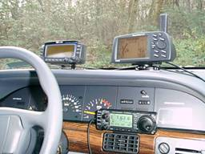
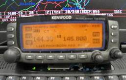
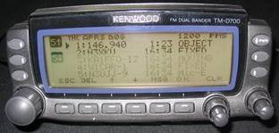
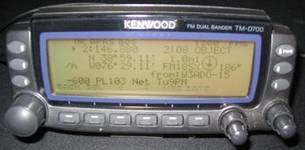
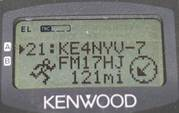
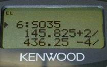
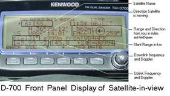
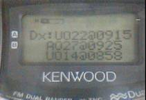

CTCSS 100 in USA
CTCSS 136 in Europe
CTCSS 91 in Australia
 Mobile HAM "radar" detector and Automatic Simplex Voice Alert System
See also: Dayton Pilgrimage
Have you ever driven on an all day trip and never found anyone to talk to? Have you passed someone with antennas all over the roof of his car, yet, can't raise him at all? Have you tried to look through the Repeater Guide to help you find a local QSO repeater, but find the listing of 10,000 mostly silent repeaters daunting, especially while moving? Remember, statistically, one out of every 500 cars you pass is another ham! On some interstates, that is one every 10 minutes.
Now, imagine a HAM radio radar that automatically alerts you to other mobiles in simplex range, or a dual band radio with a permanent 3rd full-time nationwide Voice Alert CALL channel that is always on. What a joy such a device would be. Driving the interstates with such a radio would guarantee you a new LOCAL contact on average about every 10 minutes or so! It makes the time fly while driving.
 Amazingly, such radios do exist, and in fact ANY radio with CTCSS can be used this way. Voice Alert is nothing more that setting your mobile radio to CTCSS 100 on 144.39. This works, beacuse every APRS mobile in North America that is running Voice Alert is not only listening on that channel with CTCSS 100 but he is also sending out a local simplex once-a-minute packet ping to alert other such mobiles when he is in simplex range!
The way it works is that every APRS mobile with VoiceAlert is transmitting his once-a-minute packet with CTCSS 100. So, of all the thousands of packets on that channel, only the ones with CTCSS are from mobiles and have not yet been digipeated... meaning they are local, simplex range if you hear them. Otherwise your speaker is dead quiet. This is the "radar ping" proximity alert feature of Voice Alert.
But similarly, all those Voice Alert MObies with CTCSS 100 are also monitoring the channel 100% while mobile and can hear a VOICE call with CTCSS100 just as well. Thus, it is a full time 100% monitored Voice Alert comm channel for use anywhere in North America for ximplex mobile to mobile use.
FREQUENCY ALERT: Since 2004, not only do mobile APRS travelers run Voice Alert, but the new APRS radios from Kenwood and Yaesu also beacon the selected frequency that the other band of the radio has set for Voice. So if you have APRS, you can always see what other voice band they are listening to and also call them there, even if they are not in simplex range, but you are both in range of the same repeater indicated. Not only that, but every APRS digipeater is also supposed to be sending out FREQUENCY OBJECTS that will show on the front panel of mobile radios the reeommended Voice Frequencies in the area.\ See the page on APRS localinfo.
USING VOICE-ALERT:
Voice Alert works perfectly for simplex calling. If you set CTCSS 100 and make a call, every APRS mobile in simplex range will hear your voice coming out of his "normally silent" speaker (136.5 Hz in Europe). So make the call on 144.39 and suggesting a QSY frequency. He WILL hear you. But there are two very important considerations:
1) Your call must be brief and suggesting a QSY (you are sharing the
channel with hundreds of packets)
2) You must announce "Voice Alert" in your call.
3) Do not TX with CCSS 100 (136.5 in Europe) if you are not listening for a call! (this means home stations!)
If you don't say "calling on Voice Alert", the other operator (who rarely gets a voice-alert) will hear your voice and will just assume he heard you on the other channel of his radio. He will press PTT and answer you, but since he is still on his normal Band-B, you will not hear him, and he will not be able to raise you, and so communications is lost. But if you ALWAYS include "voice alert" in your voice call, then he immediately knows to switch to BAND-A before he responds. His response should always be something like "Roger, please QSY to my voice channel of XXX.XXX".
An even better procedure is for the CALLING station to say "Voice Alert, listening on 52". This way, the responding party does not even need to respond on 144.39 and risk collision with the packets, but can QSY immediately to 52 and return the call. And from there, negotiate a repeater as you go out of range.
Thus a Voice-Alert call takes up only about 4 seconds of air time, yet establishes a common frequency for the continued voice contact. Never continue to QSO by voice on 144.39. It is discourteous to other users of the channel because it may block some of their packets..
Never leave your rig running with CTCSS-100 (136.5 in Europe) transmitting packets (tagged with CTCSS 100) if you are not in attendance and are not listening for a call. This is discourteous because it is like calling "CQ" and not listening for return calls. See next paragraph.
RADIO SETUP: The most important thing about Voice Alert is keeping the APRS Channel Volume controll turned up, and to avoid inadvertantly turning it down and forgetting it is down. Therefore, NEVER touch that volume control! Control the SPEAKER on the APRS channel by programming three APRS channels, and give them the following names (These frequencies are for North America):
CH1 "APRS VA " 144.39 CTCSS 100 . . <== normal APRS Voice Alert operation
CH2 "APRSmute" 144.39 DCS XXX . . . <== To keep speaker QUIET even with other VA's nearby
CH3 "APRS raw" 144.39 no tones . . . . . <== for listening/troubleshooting the raw channel
CH4 "APRSinpt" . 144.39 no tones +600 <== For high reliability reception of event stations
CH5 "APRSdigi" . 144.99 no tones. -600 <== For Temporary WIDE1-1 digi operation
Channel 2 effectively turns off the speaker by using a PL tone or DCS that is different from any other operator, then you will never hear someone else even if they are running VA and are right next to you. So this is your MUTED channel, but note, that you can still be called by someone who knows your private XXX tone! So using these 3 channels you can easily control what you hear on the APRS side of the radio, wihtout ever having to touch the TONE, or Volume or any other menu.
MOBILE HAM PROXIMITY RADAR PINGS:
OK, so Voice Alert is a magic always-on-always available voice calling channel for simplex mobile-to-mobile use, but now how do you know when you are in range of another Voice-Alert mobile? Well, that is the Proximity Ping function of Voice Alert. Remember, the APRS mobile with VoiceAlert set is tagging his packets with a CTCSS 100 tone. So anyone else that is set to Voice Alert, will hear his once a minute or so packets as if they were a free PING to alert others he is in simplex range! (136.5 in Europe).
Yes, you will hear an occasional ping. But ONLY when someone else with Voice Alert is in simplex range *and* is also listening with CTCSS 100. SOmtimes you can drive for hours and not hear anything. But if you have Voice-Alert set, you will not miss it when another Voice Alert mobile passes by. ENjoy Ham radio... make a voice contact!
Do not be confused by all the wall-to-wall packets on the channel. Those are all digipeated packets and none of them will have CTCSS 100. Only the once a minute one from another Voice Alert mobile in simplex range.. a rare event, but one you will now not miss! During my 30 minute commute, I may only hear 2 or 3 Voice-Alert packets total, and then only if Skip, or Todd has gotten in his car and passes me! (the other two hams in the county running Voice Alert that I get within a few miles of on my commute).
Again, your speaker is silent 99.9% of the time when there is no other Voice Alert nearby. But even when one is near during that other 0.1% of the time? Only a single SHORT packet, once every 1 to 3 minutes and ONLY if someone else running Voice Alert is in simplex range. If you are passing each other at 60 MPH each, you will not be in simplex range for more than about 3 to 5 minutes maximum anyway. Think of these few packets you hear as "pings" from neighbors wanting to chat.
If you go to a hamfest and are surrounded by other APRS VOice Alert mobiles and dont want to hear the other pings, then disable Voice Alert (not volume down) by simply changing from the 144.39 CTCSS 100 channel to 144.39 CTCSS xxx. No one else is using CTCSS xxx and so you will not hear anything. THis gives you slience but allows you to still keep the volume turned up in case somone wants to call you with your private Tone xxx.
VOICE ALERT FOR EVERYONE:
OK, so this is an "APRS thing" right? No. Anyone can use Voice-Alert to detect someone else in range. That is, if you are mobile, can't raise anyone on 146.52, and don't have anything else for your single channel voice radio to do, then just put it on your 144.39 CTCSS-100 (136.5 in Europe) memory channel and your "radar" receiver will be on. If any other APRS Voice-Alert mobile gets in range of you, his "pings" will wake you up for a nice local simplex QSO. So, even though only the APRS Voice-Alert mobile stations will be "pinging", there is no limit to how many others can be listening. And since most serious distant travelers run APRS anyway, the chances are good you will run into someone using it.
BASE STATION USE NOT DESIRED!:
Notice, that ALL mobile voice alert stations are guaranteed to have an OPERATOR PRESENT (the Driver). And since Voice Alert is an AUTOMATIC CQ system, then it is an abomination to be running VA and to *not* be present to answer any calls. And this will happen if you run VOice Alert from a fixed sttaion or shackj. This will kill the fun, convenience and practicality of Voice Alert when people hear a ping, make a call and get no response. Not only is is an irritant to everyone in range but they will turn off Voice Alert and all is lost in that area.
In Washington DC, for example, there is a station running voice alert 100% of the time. This means whenever you are in town, you will hear a packet every minute over a very large area (his base station antenna has 10 times the coverage of a mobile). This forces routine mobiles entering DC to turn down their Band A voice Alert volume most of the time (becuse this guy never answers). Then they forget to turn it back up when they leave Washington DC. Thus, this single fixed station has killed voice alert in that area. Oh, and if you try to raise him, there is never any answer, because he is not home.
Conversly, a mobile is 1) Guaranteed to have an operator, 2) who is listening, 3) is always moving when operating, so he does not QRM the same area continuously, and 4) his PL 100 (136.5 in Europe) packets are doing what they are supposed to, that is, alerting you to his passing presence. The only ways a base station can monitor Voice Alert are:
1) Using a voice -only radio or scanner or receiver (not connected to their packet system)
2) Using a radio with SEPARATE CTCSS and TX PL tones, so that packets are not transmitted
with PL 100 (136.5 in Europe)
Such radios are IC-706, HTX242,
WHATS WRONG WITH 52?
So how is this different than 146.52? Easy. With combined passing velocities of almost 140 MPH, two passing mobiles will only be in simplex range of each other for about 5 minutes or less. Unless both of you are calling "CQ-52" every 2 minutes or so, you may pass in the night and never know the other person was in range. Also, you cannot run CTCSS on 146.52 or you won't hear anyone. Thus, your radio does open squelch when you encounter any external QRM. Your reaction is naturally to turn the volume down. This is another great way to miss a QSO. You may drive for hours, not remembering that you turned the volume down. But with CTCSS-100 (136.5 in Europe) on 144.39, you will never hear any QRM. The only thing you will hear will be others like you. Yes, QSY to 52 for the QSO, but use the HAM Radio Voice Alert RADAR on 144.39 as the alert!
HOW VOICE ALERT WORKS:
Notice, that this only works easily with radios that have their TNC's connected to the discriminator in front of any CTCSS Squelch systems. The Kenwood D7 and D700 radios work perfectly this way due to their built-in fully integrated APRS TNC's. This is because the TNC's listen to the radio prior to the CTCSS tone squelch system so that whether or not the CTCSS is set, will not affect normal APRS operation in any way. The only thing impacted by CTCSS-100 (136.5 in Europe) is the speaker. Thus, it works perfectly for Voice, and perfectly for packet at the same time. Other APRS mobiles that use external TNC's cannot set CTCSS-100 (136.5 in Europe) without killing their packet receive capability because their TNC is connected to the speaker. However, the serious mobile traveler can easily overcome this restriction if he uses the external discriminator connector on his radio for his external TNC. This way, his TNC also can hear all packets prior to the operation of the CTCSS tone squelch system which only impacts the speaker. In this way, he too can run Voice-Alert with CTCSS-100 (136.5 in Europe) muting his speaker while allowing APRS mobile packet to work as well.
But it is important to note that a direct discriminator (or 9600 baud data connection) in many radios does not have the normal FM de-emphasis circuit. Thus, it will skew the packet tones and degrade performance unless you add a resistor and capacitor to de-emphasize the audio before getting to the TNC. Fortunately, many TNC's have an internal jumper labeled something like "audio equalization" which can be configured to add the de-emphasis inside the TNC with no hardware mods other than moving the jumper. Some TNC's may work OK as is with the discriminator also. You may as well give it a try!
VOICE ALERT OPERATING RULES:
The tremendous power of APRS Voice Alert also carries with it some responsibilities of proper operation. The rules are simple and should be obvious to anyone who thinks about how the system works:
1) Program your radio with three APRS channels for easy switching.
One with CTCSS 100 (136.5 in Europe, one with your own XXX CTCSS and one with none.
2) APRS Voice Alert is for "ATTENDED OPERATIONS ONLY".
Never leave it on unattended.
3) An unattended Voice Alert station is a NUISANCE to everyone for miles around.
4) NEVER transmit PL-100 (or 136.5) packets unless you are ACTIVLEY LISTENING with CTCSS.
5) Voice-Alert is a calling channel ONLY. QSY immediately to a normal voice channel.
6) ALWAYS say "voice alert" in any PL-100 (or 136.5) voice transmission to minimize confusion on receipt
7) NEVER turn your 144.39 speaker volume down. To silence another nearby VA station,
change to your APRSmute channel instead.
Transmitting CTCSS-100 (or 136.5 in Europe) Voice Alert with your volume down is like sitting in the middle of a DX pileup calling CQ with your speaker disconnected. It is discourteous to everyone. Do not do it. If you want to turn your APRS Voice Alert volume down, then turn off CTCSS first.
REGIONAL CROSS-BAND VOICE-ALERT:
It is entirely reasonable to set up a crossband Regional APRS Voice Alert system, so that you can call ALL APRS Voice Alert mobiles over large areas, not just simplex. This is easily done by placing a cross band repeater at a very high central location with a UHF radio on the UHF APRS Voice calling frequency (445.925 PL 100 (136.5 in Europe) if available in your area) connected back-to-back to a VHF radio for Voice Alert. Operate the VHF radio split, transmitting on Voice Alert 144.39 T100 (or T136), but Receiving on the national calling channel of 146.52 CTCSS 100 (or 136.5 in Europe).
This way, a mobile needing to make a call-up to all APRS Mobiles in the area, can simply call on 445.925 and all Voice alert mobiles will hear him. They will call back on 52 with TONE 100 (or 136 in Europe) to establish contact and negotiate a repeater to complete the call. The reason for the TONE on 52, is so that the crossband repeater is not relaying all normal 52 regional traffic onto the 445.925 channel. As before, the caller must make it clear what he is doing. The call should be of the form: "WB4APR crossband Voice Alert, listening on 52 TONE 100" (or 136 in Europe), so there is no ambiguity in the response expected.
FAMILY VOICE-ALERT
Of course, another use for APRS Voice Alert is to put the wife's APRS vehicle on the same CTCSS XXX as your APRSmute channel. This lets you and your wife have a private simplex calling channel and range detector! This way, you can monitor 144.39 from home with that family CTCSS and detect when she is in the neighborhood. This is useful for running from the shack to the Kitchen and washing dishes or something so it doesn't look like you were spending all day in the shack.
OTHER APRS MOBILE FUNCTIONS:
Notice that none of this article has said anything about the all the additional mobile uses of APRS and the contents of the packets. Entire Encyclopedias of information have been written about all the joy and potential of using APRS for all Ham radio applications, both on the open road and locally so such a dissertation would be beyond the scope of this article. However, we would be remiss if we did not at least mention some of the great benefits to the traveler of having a radio with a front panel text display that can display local tactical information to the traveler.
OTHER MOBILES ON APRS:
Of course the Kenwood D7, D700's and now Yaseu APRS radios both capture the data from all other mobiles in range and maintain a constantly sorted list of the last 40 to 100 stations heard. This list shows up on the front panel with a single press of the LIST button as shown in the figure below.

In this example there are not only 4 other stations shown in the list, but also the frequency of the local "travelers Voice Repeater" is also shown as an APRS object. This is very handy for a distant traveler entering a new area. If the operator clicks on that object, he gets additional information about that voice repeater, such as offset, PL and any regularly scheduled nets.

For more info on the display of local information on the front panel of the mobile travelers radio, please see the two web pages:
After selecting a given station from the LIST, you get a full page of information on the D700 or up to 5 additional three-line pages of information on the D7 HT as shown in the figure to the right. This one shows KE4NYV-7 is an HT operator that is 121 miles to the Southwwest. These pages show you all kinds of useful information:

1) Type of ICON (Car, boat, jeep, airplane, bike, truck, van, etc)
2) Distance and range from you
3) Grid Square if you are interested
4) Time of receipt
5) Up to 20 (D7) or 28(D700) characters of status text
6) His course and speed (you can see if he is approaching you are already passed)
7) His LAT/LON. (usually ignored, since his posit will displayed on your GPS map automatically)
Normally, it's a good idea to use your 20/28 characters of packet text to announce your Email address if your are a fixed station, or your Band-B voice frequency if you are mobile and keeping up with it. Otherwise, just set your text to say "144.39 PL-100 Voice Alert" (or 136 in Europe).
IRLP and ECHO-LINK NODES:
A recent boon to the traveler is the worldwide network of IRLP and ECHOlink nodes that give the mobile traveler almost worldwide voice access as long as he knows where they are. But with thousands of nodes, this is becoming an almost impossible administrative task while mobile. Fortunately at our urging, both IRLP and ECHOlink have added APRS beacon capability to their software so that with the simple configurations, the node can announce itself on APRS. This way, the mobile traveler in simplex range of such a node can be alerted immediately not only to the presence of a nearby node, but also to the Frequency, PL and status of the node in real time!
A properly configured IRLP or ECHOLINK node will show up on a D700 front panel. Since the Node type and number are included in the APRS Object name, then this information shows up clearly on the station LIST and also the additional information of the Frequency, PL and Status show up when it is selected as shown in Figure 5. Like any other object in APRS, its distance and bearing from you is also shown. This is very handy for visiting mobile operators.
Figure 5. (A dual shot showing both the LIST display and the Station display with a node on it)
The node status is transmitted once every 10 minutes or once every time the node changes state. When the node is connected to another node, that information is shown as well. You might think that a once every 10 minute packet is an added load on an already busy 1200 baud channel. But this is simply not the case. These NODE status packets are only transmitted DIRECT, locally to only those mobiles in usable simplex range of the nodes site. This only adds about 0.1% additional "local" load and this kind of local, real-time usable information is exaclty what APRS was designed to do in the first place!
MOBILE SATELLITE OPS:
 Another thing you will see on your APRS radio front panel is an occasional alert when ever an FM satellite workable from your mobile is in view. Just like for Nodes, not only is the distance and bearing to the bird calculated and shown for your station, but also the uplink an downlink frequency and instantaneous Doppler as well! (as shown here). These packets are transmitted by a local station running the APRSdata.exe program to all mobiles in range. Back when UO-22, Pcsat, ISS, SAREX, SUNSAT, AO-27 and UO-14 were all alive and workable from any dual band or packet mobile, these LIVE alerts to satellites in view were very handy. These days, only GO-32 is working reliably, but it uses 9600 baud which is perfect for the D7 or D700. see GO-32 APRS info. It is nice to get an immediate alert whenever GO-32 is overhead and a reminder to its frequencies right there on the front panel of your radio no matter where you are and without you doing a thing to get it.

 But in addition to the while-in-view packets, the APRSdata engine in the area also transmits once every 10 minutes a schedule of ANY other satellites that my come into view in the next 80 minutes as shown in figure 7. This brief packet does not clutter up your APRS message list, but is captured into the D7 or D700 DX Cluster list. There, as long as the radio is not turned off, you will always find the latest schedule of any interesting satellites you might want to work in the next hour or so. Figure 7. The D7 DX list display showing the next three satellites that will be in view in the next 80 minutes and the TIMES of the start of the next pass.
WEATHER:
Of course, since APRS was invented in 1992, local Weather has always been of particular interest to mobile operators. Any home APRS station with a weather instrument usually transmits his local weather conditions in his position packets. These are captured in the D700 or D7 lists as well and are available to the mobile operator. They not only show the distance and bearing to the home weather station , but also the wind speed and direction, temperature and rain in the last hour as shown in figure 8. This is very handy for the distant traveler to see what the weather looks like in front of him.
Figure 8. (a Weather station) In addition to home weather stations, National Weather Service warnings and watches are also transmitted on APRS for local users. These are transmitted as bulletins or messages and will show up as shown in figure 9.
Figure 9. (a Weather Warning)
EMAIL:
Of course you can also send and receive APRS messages with the front panel of these radios. This is routine. But the more useful function of APRS messages for distant travelers is to send Email back home to family about the progress of the trip. As shown in figure 10, and APRS message addressed to the address of "EMAIL" will be picked up by the worldwide APRS system and captured by the Sproul's WU2Z packet engine and converted into a standard Email and forwarded through the internet. If this process is successful, you will get an acknowledgement in real time.
Figure 10. (a dual shot showing the outgoing Email message and the Return WU2Z ack).
HAMFESTS AND EVENTS:
Of course, with APRS, you will never miss a local HAM event that is in range of you. Anyone running such an event, usually puts up an APRS bulletin or OBEJCT alerting everyone in range of something happening. Figure 11 shows a HAMFEST object and a Meeting Bulletin.
Figure 11: (Shows a HAMEST object with talk in frequency listed, and a Bulletin screen announcing a (local meeting TOINGHT and the subject)
TRAFFIC CONGESTION:
All of the above features are working and on the air in some places. But the one dream of APRS for mobile commuters is the placement of TRAFFIC objects on the map where ever traffic accidents or slow-downs occur. APRS has a special ICON just for this purpose. The ICON is a "speed sign" that appears on the map beside the road showing the speed of traffic past that point. Figure 12 shows how these would appear on the Kenwood D700. Anyone can post these objects manually, but the holy grail is to have it automated. We considered radar devices as sensors or even just capturing the speed of any other APRS operator that passed the point, but these days it should be trivial for someone to write the software to simply check the State Highway Departement's WEB page and mine the speed data from their speed measuring system and then have that software simply convert the data to the APRS object format and send it out via an attached TNC.
Figure 12: (Shows an OBJECT labeled "Route-50W" with text saying "speed slowed to [15]MPH")
That indicates that traffic on route 50 west bound has slowed .
CONCLUSION:
Although APRS has pretty well caught on to most of the HAMS interested in playing with computers and packet radio, we still find that most of the other 95% of ham radio operators really do not fully understand what APRS is all about and that in reality it is not just a mobile vehicle tracking system. Since the day it was invented, it has always claimed to be, and remains, a LOCAL Tactical Real Time Digital Communications system designed to deliver immediate up-to-date information to all stations in range an d particularly to the mobile operator. With the front panel displays of almost 250 pages of information on the D7 HT or the 65 or more dense pages on the D700, there is still lots of potential for delivering even more useful data to mobile travelers as they come in range of your HAM radio assets.
If you haven't explored the advantages of Mobile APRS, then join us. If you don't have APRS mobile, then listen for us on 144.39 Voice Alert and give us a call.
de WB4APR